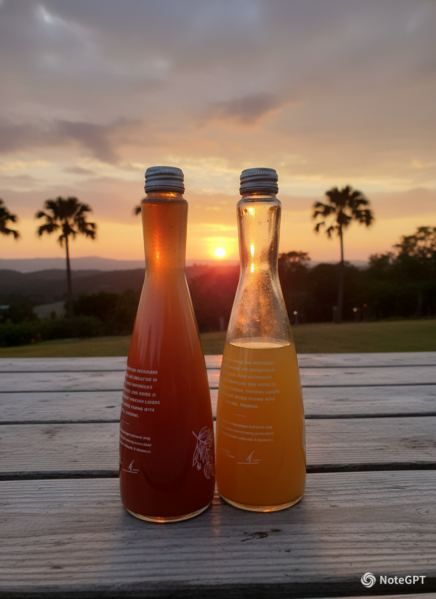
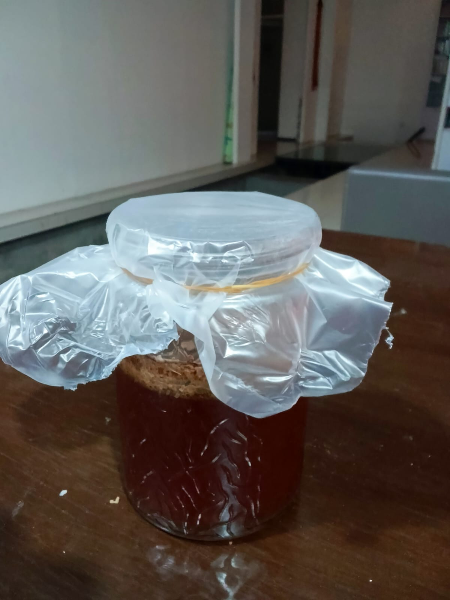

Produk Pangan Inovatif dari Soda Kemasan:
Wine Soda Kemasan Dari Fanta Jeruk & Coca-Cola

Wine Soda Kemasan adalah produk minuman inovasi bioteknologi konvensional yang dihasilkan melalui proses fermentasi buah anggur hitam dengan bantuan mikroorganisme ragi Saccharomyces cerevisiae. Dalam proses ini, ragi mengubah kandungan gula alami dalam buah menjadi alkohol dan gas karbon dioksida (CO2) secara anaerob. Produk ini dirancang sebagai minuman kemasan yang praktis namun tetap mempertahankan nilai gizi dari bahan soda kemasan.

Untuk membuat fermentasi wine dari soda kemasan, langkah pertama adalah menyiapkan wadah penampung yang disarankan terbuat dari kaca. Penggunaan kaca sangat penting agar wadah tidak rusak selama proses fermentasi dan menjaga agar hasil fermentasi tidak terkontaminasi. Mulailah dengan memasukkan 189 gram gula pasir ke dalam wadah kaca kosong tersebut. Selanjutnya, tuangkan satu botol Fanta dan satu botol Coca-Cola dari posisi yang agak tinggi; teknik penuangan ini bertujuan untuk membantu membuang kandungan gas karbon dioksida ($CO_2$) yang ada di dalam soda.Setelah campuran soda siap, timbanglah ragi roti Fermipan hingga mencapai berat 5 gram, lalu masukkan ragi tersebut ke dalam campuran. Ragi inilah yang memegang peran kunci untuk mengubah gula menjadi alkohol. Aduk semua bahan hingga tercampur rata, kemudian tutup rapat mulut wadah menggunakan plastik pembungkus agar proses fermentasi dapat berlangsung secara anaerob.Diamkan campuran tersebut selama kurang lebih 7 hari. Setelah masa satu minggu berlalu, saring cairan tersebut dan pindahkan ke wadah atau jeriken baru yang telah dilengkapi dengan airlock menggunakan bantuan corong. Biarkan proses berlanjut hingga total waktu mencapai 28 hari. Terakhir, pindahkan hasil fermentasi ke dalam botol kaca yang bersih untuk kemudian dibandingkan dan dinilai hasil produk akhirnya.